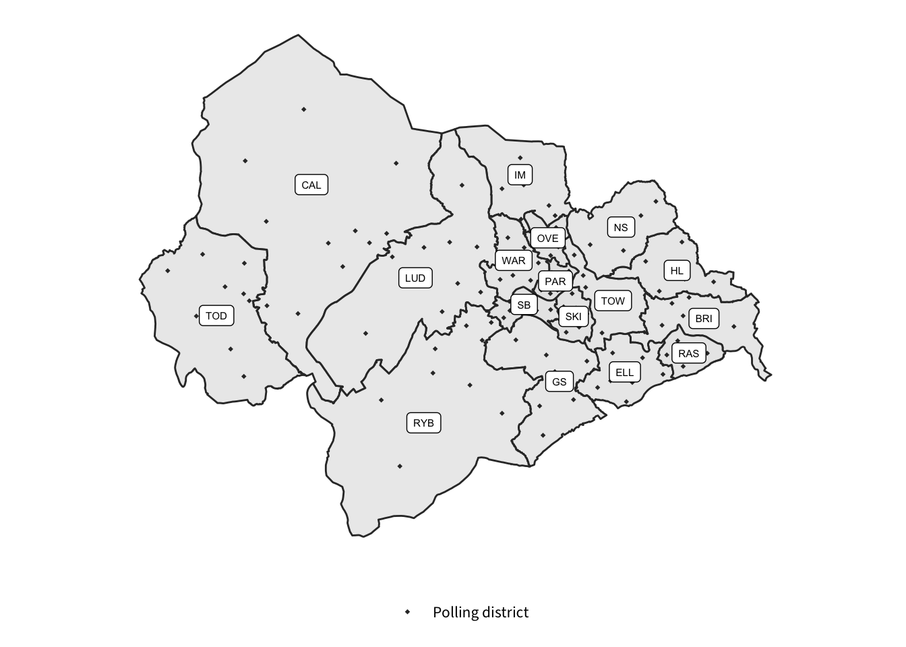

The Boundary Commissions for each country are holding a review of Parliamentary constituency boundaries on the basis of new rules introduced by Parliament in 2020. The rules require the Boundary Commissions to make more equal the number of electors in each constituency, while keeping the overall number of constituencies across the UK at 650. England has been allocated 543 constituencies for the 2023 Review, ten more than there are currently.
With the exception of two constituencies covering the Isle of Wight, each constituency must contain no fewer than 69,724 electors and no more than 77,062.
 Download map as SVG
| Ward | Electorate* | Abbreviation |
|---|---|---|
| Ryburn | 9,068 | RYB |
| Todmorden | 9,168 | TOD |
| Calder | 9,456 | CAL |
| Brighouse | 8,387 | BRI |
| Greetland And Stainland | 8,499 | GS |
| Luddendenfoot | 8,114 | LUD |
| Hipperholme And Lightcliffe | 9,110 | HL |
| Illingworth And Mixenden | 9,018 | IM |
| Sowerby Bridge | 8,793 | SB |
| Elland | 8,633 | ELL |
| Rastrick | 8,389 | RAS |
| Warley | 8,907 | WAR |
| Park | 9,166 | PAR |
| Town | 8,793 | TOW |
| Northowram And Shelf | 9,165 | NS |
| Skircoat | 9,688 | SKI |
| Ovenden | 8,196 | OVE |
| Total | 150,550 |
Next: The current position
{kind=link}